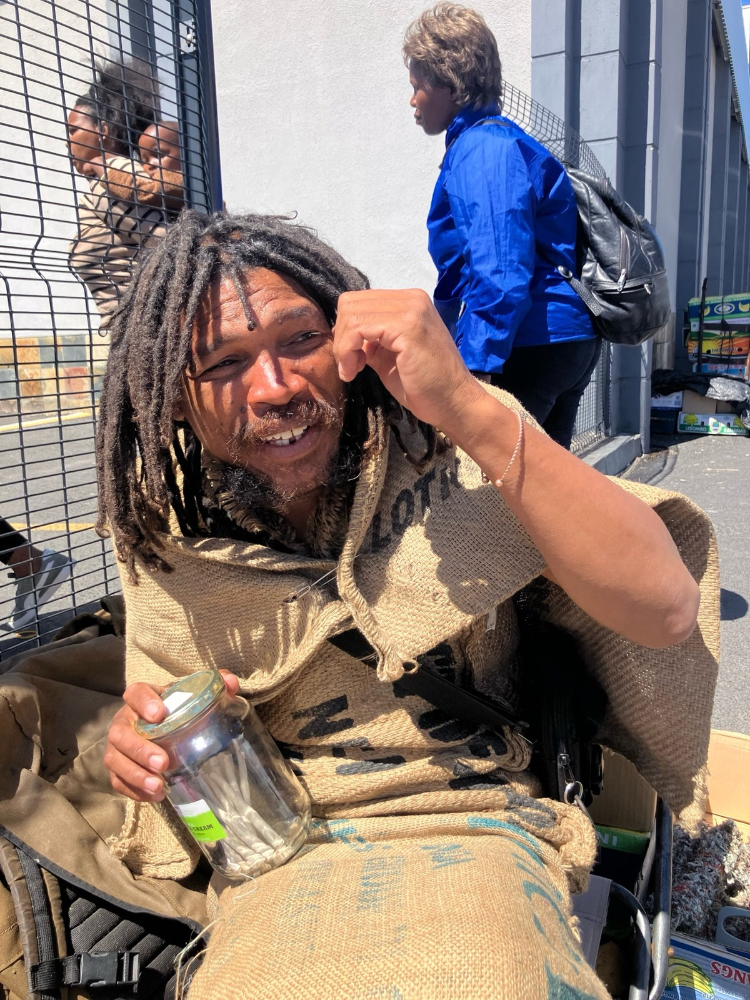

Herbal preparations
Dental Ointment, Joseph's Mystic Balm and Joseph's Mystic Ointment, prepared with mountain garlic, calamus, aloe, rosemary, lavender, African potato and other named ingredients.
R90 eachAbout Joseph · Cape Town
Joseph is a Cape Town traditional healer trained by Khoi San elders, working with mountain herbs, herbal remedies and a Rastafarian way of life in Fish Hoek.

Joseph's story
Joseph's work is shaped by traditional plant knowledge, the mountains around Cape Town and a lifetime of living close to nature. His training with Khoi San elders forms part of the knowledge he carries into his daily practice as a traditional healer.
He travels out to mountain slopes, fields and beds of herbs, gathering plants with attention to season, place and availability. His herb table may include Wilde Dagga, mountain garlic, aloe, African potato, sage and buchu, alongside other local herbs as the land offers them.
Rastafarian livity
Joseph's Rastafarian ideology and lifestyle guide the way he moves through the world: respect for the Creator, reverence for nature, connection to the land, self-reliance, community, honest work and a natural approach to daily living.
This is a lived practice rather than a decorative label. The rhythm of gathering, preparing, sharing knowledge and meeting people at the Shoprite entrance is part of his livity. His table brings together herbal goods, conversation and a direct relationship between the person asking and the person preparing the order.
Clients can visit Joseph at the Dunster Road entrance of Shoprite in Fish Hoek, WhatsApp him about stock, discuss a traditional herbal consultation and arrange a collection time.
Handmade herbal goods
Dental Ointment, Joseph's Mystic Balm and Joseph's Mystic Ointment, prepared with mountain garlic, calamus, aloe, rosemary, lavender, African potato and other named ingredients.
R90 eachWilde Dagga, sage, buchu, rosemary and other herbs offered as bundles or larger quantities when available.
R50 per bundle · R375 per 500 gHandmade soap for local collection.
R50 per 50 g · R350 per 500 gWhatsApp for current stock, traditional herbal consultations, prices and collection at Shoprite Fish Hoek.
WhatsApp +27 82 462 4970 ↗